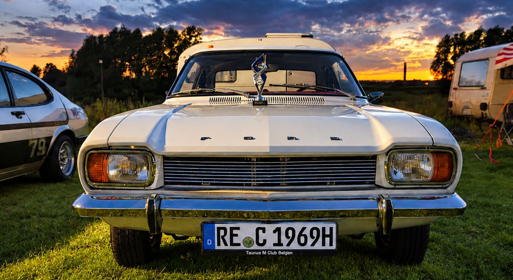

Willkommen beim Capri Club Westerholt
Schön, dass Du hier bist! Der Capri Club Westerholt ist eine Gemeinschaft von Enthusiasten, die die Faszination für den Ford Capri verbindet und die Begeisterung für dieses besondere Fahrzeug gemeinsam lebt.

Erneut mit Pokal nach Hause
Der weiße Capri von Janina war zum zweiten Mal bei einem Ford Capri Treffen dabei – und auch diesmal kam er nicht ohne Pokal nach Hause.
Eine schöne Auszeichnung und ein schönes Beispiel dafür, dass unsere Leidenschaft Generationen verbindet.
Capri mehr als ein Auto

Club-Update: Ausfahrten 2.0?
Die Benzinpreise steigen – und unsere Capris fahren einfach trotzdem! Oder etwa doch nicht? 😉
In diesem KI-Video dreht unser Capri eine Runde durch verschiedene Szenen, ganz ohne einen Tropfen Sprit zu verbrauchen.
Vielleicht sieht so ja die Zukunft unserer gemeinsamen Ausfahrten aus?
Keine Tankstopps, keine Spritkosten und trotzdem jede Menge Fahrspaß!
Aber keine Sorge: Wir bleiben lieber beim Original – auch wenn’s an der Zapfsäule manchmal wehtut! 😂
Teilemarkt für alle Capri-Fans!
Zum zweiten Mal in Herne!
24.04.2027
Am 24. April heißt es wieder: Teile suchen, Schnäppchen machen und über alles reden, was vier Räder und einen Capri-Schriftzug hat.
Ob seltenes Originalteil, lange gesuchtes Schnäppchen oder einfach ein bisschen Capri-Schnack – hier trifft sich die Szene zum gemeinsamen Start in die neue Saison.
Für Besucher ist der Teilemarkt kostenlos, Händler zahlen lediglich einen kleinen Obolus.
Für Speisen und Getränke sorgt wie immer der CCW. 🌭🍺
Du möchtest selbst Teile anbieten?
Dann melde Dich einfach ab dem 01.01.27 über das
Anmeldeformular
an.
Wir freuen uns auf Euch – auf alte Bekannte, neue Gesichter und natürlich jede Menge Benzingespräche! 😎
Wir machen es wieder!
Capri 4-Länder-Treffen 2027
Nach dem gelungenen Auftakt im Jahr 2023 haben wir uns entschieden, wieder ein 4-Länder-Treffen zu organisieren.
Diesmal haben wir mehr Zeit zwischen den Treffen eingeplant, um es euch zu ermöglichen, alle vier Treffen zu besuchen. Die Treffen sind über drei Monate verteilt, und das Finale findet beim Capri Club Westerholt statt. Dort erhalten die Fahrer, die an allen vier Treffen teilgenommen haben, ein Überraschungsgeschenk. Natürlich wird es wieder ein Erinnerungsartikel geben.